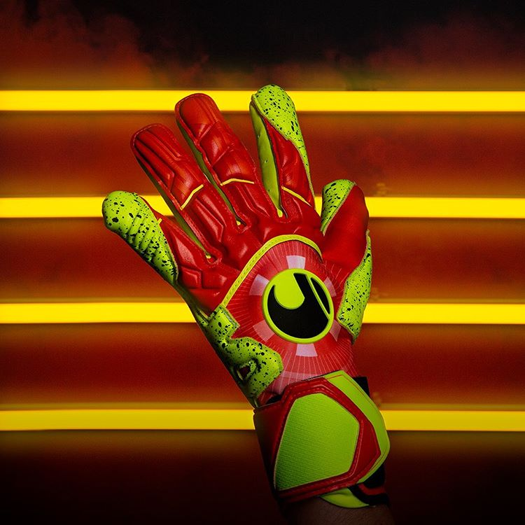

Demandez votre devis
Veuillez écrire votre demande
Orzale Umbria 2.0
La nouvelle version du Umbria de la marque française vous laissera sans voix
Image
Description de la paire de gants
Coupe: hybride spécifique permettant une augmentation de la surface de grip et un écartement des doigts pour rendre la prise de balle plus intuitive.
Dessus: Gants composé d'une seule pièce de mesh léger et respirant sur lequel se greffe un Latex Premium pour garantir un grand confort et une bonne souplesse du gant
Paume : longue afin de maximiser la zone de grip et aider à la prise de balle dans toutes les situations.
Les gardiens à la recherche d'une large surface de grip mais aussi de légèreté et de technicité.
Prix: 59.95€
Nike Vapor Grip 3
Reconnus sur les terrains du monde entier aux mains de gardiens internationaux comme Joe Hart, Yann Sommer ou Thibaut Courtois, les Vapor Grip 3 bénéficient de nombreuses innovations technologiques et d'un style renouvelé
image
Description de la paire de gants
Coupe : Grip 3 (mélange entre coutures plates et Rollfinger)
Paume : Contact Plus 4 mm
Dessus : Textile Mesh et latex Natural Motion
Fermeture : Bandage intégral avec bande velcro en latex
Protections : Aucune
Personnalisation : Possible
La coupe retravaillée est maintenant plus ajustée et plus proche de main agi comme une seconde peau. La forme des doigts est conçue avec la technologie Grip 3 avec coutures Rollfinger sur le pouce, l'index et l'auriculaire pour un contrôle parfait et total du ballon en toutes situations. Nouvelle génération de latex Contact Plus plus volumineux et plus performant, quelques soient les conditions climatiques pour plus de confiance dans les prises de balle. Cette mousse procure aussi un grand amorti sur les tirs les plus puissants. Le corps du gants est en textile Mesh qui permet à l'air frais de circuler à l'intérieur. La nouveauté principale Natural Motion sur le dessus de la main propose un latex désormais extensible pour un ajustement optimum durant le jeu tout en assurant plus d'agilité et de contrôle. Fermeture classique avec sangle velcro ajustable sur un poignet bandage en coton.
Prix: 94.95€
Uhlsport Dynamic Supergrip Reflex
La paire de gants des gardiens stars de Ligue 1 comme Anthony Lopes, Mike Maignan, Benjamin Lecomte
image
Description de la paire de gants
Coupe : Reflex en coutures négatives
Paume : Supergrip jaune fluo avec concept Stimulate au poignet
Dessus : Matière néoprène sans couture, latex et Schockzone en Supergrip
Fermeture : Bandage en néoprène asymétrique avec insert en lycra avec sangle velcro semi élastique ergonomique en Supergrip
Protection : Aucune
Personnalisation : Possible
Le Reflex Supergrip est le top de gamme de la ligne Dynamic Impulse, il est livré avec une serviette d'entretien micro-fibre et un mini gant. Ses très nombreuses innovations technologiques dont la coupe Reflex et le Stimulate en font en gants de très haut niveau. La coupe Reflex Cut garantit un toucher sans couture ni goussets entre les doigts pour une sensation absolue de confort et une prise de balle à 360°. Le revers des doigts est aussi enveloppé pour un confort optimal et un confort sécuritaire. Associé aux coutures négatives, ce concept offre une prise de balle plus précise, un contact direct avec le ballon car votre main est idéalement moulée dans le gant sans jamais être gênée par de la matière superflue. Latex Supergrip jaune fluo pour une meilleure adhérence et une résistance à l‘abrasion remarquable, les particules noires sur la mousse ajoutent une adhérence très importante sous touts types de conditions. Le concept Stimulate situé à l'intérieur du gant au niveau du pouls stimule par de petits picots en caoutchouc le tissu corporel pour favoriser la circulation du sang et d'oxygène afin d'augmenter la capacité de réaction de la main, de reflex et une meilleure coordination entre la vision du ballon et le geste pour le stopper. Le corps du gant est mélange entre néoprène, qui permet un haut niveau de confort, de légèreté, de flexibilité et de toucher pour un contact remarquable avec la balle, et de latex qui recouvre les doigts pour augmenter le confort et la protection. Zones optimisées Grip 360° avec des parties en latex Supergrip sur toutes les zones en contact avec le ballon comme sur la sangle velcro, le pouce, le retour sur l'index et l'auriculaire ainsi que sur le tranchant de la main. Nouvelle 3D Schockzone optimisée en Supergrip avec une mousse intégrant un haut niveau de rebond. Système d'entrée de la main facile et résistante avec bandage asymétrique et très flexible avec insert en lycra. Fermeture velcro avec sangle plus courte, ergonomique et semi élastique en latex Supergrip pour un maintien individuel précis et ferme au poignet.
Prix: 149.95€
Adidas Predator Pro Hybrid
Choix n°1 des pros, la marque allemande équipe André Ter Stegen, Manuel Nueur, André Onana
image

Description de la paire de gants
Coupe : Hybride avec Fingertip
Paume : URG 1.0 avec insert anti abrasion
Dessus : Textile Knit ergonomique sans coutures et Punching Zone en silicone
Fermeture : Bandeau élastique avec double sangle velcro Strech-Strap amovible
Protection : Aucune
Personnalisation : Possible
La coupe hybride est un mélange de coutures négatives sur la longueur des doigts puis arrondie sur le bout des doigts, enveloppant ainsi totalement la zone de contact avec le ballon pour une prise naturelle et toujours en contact avec le latex de la paume. L'extension de mousse sur le revers du bout des doigts augmente lui considérablement le toucher de balle et la sensation de confort. Le latex breveté URG 1.0 blanc propose un grip exceptionnellement fort par tous types de conditions de jeu ainsi qu'un amorti supplémentaire des chocs. Si l'adhérence est aussi forte et parmi les meilleures existantes, c'est par le procédé d'un nouveau latex utilisé uniquement par les professionnels, du coup il est important de noter que la résistance est nettement moins forte que sur le gant classique de la gamme. Un insert anti abrasion situé sur la partie la plus sensible de la base du poignet renforce considérablement le latex sans gêner la prise de balle. Le corps du gants est composé d'une matière textile Knit ergonomique extensible très proche de la main, beaucoup plus résistante et idéalement flexible. Punching Zone sur le revers de la main composé de solides éléments ergonomiques en silicone pour augmenter la puissance et la précision lors des dégagements aux poings. Ils s'intègrent parfaitement au design du gant offrant ainsi une visibilité reconnaissable immédiatement. Fermeture avec bandeau élastique sans couture au poignet pour faciliter l'entrée de la main dans le gant qui assure confort et maintien adaptatif. Fermeture Strech-Strap avec double sangle velcro pour un ajustement et un confort individuel assurant de meilleures caractéristiques de stabilisation et de maintien au poignet. Cette sangle est amovible afin de vous permettre le choix de jouer avec pour un maintien et une stabilisation renforcée ou sans pour optimiser la légèreté et les mouvements naturels du poignet sans restriction
Prix: 114.95€
Sells Pro Revolve H2O
Le gant à l'anglaise, le meilleur gant de pluie!
image
Description de la paire de gants
Coupe : Radial Cut
Paume : Absolute Latex 4 mm + 5 mm de mousse à mémoire de forme
Dessus : Matière Outlast® Eclair Meshet latex gaufré anatomique
Fermeture : Bandage intégral en néoprène de 9 cm de largeur avec rabat en latex enveloppant plus zone élastique pour un maintien plus précis et système Easy on pour ajustement rapide
Protections : Aucune
Personnalisation : Possible
La nouvelle coupe Radial Cut exclusive de Sells enveloppe la main, le petit doigt et l'index pour un toucher de balle ultime et flexible jusqu'au bout des doigts tout en développant une plus grande surface de contact grace au coutures plates sur le reste de la main. La mousse Absolute Latex 4 mm garantie une adhérence exceptionnelle sous tous les différentes conditions climatiques ainsi qu'une très grande absorption des chocs. Le textile Mesh Outlast® Eclair Mesh permet une thermo-régulation qui s'adapte à la température de votre corps vous aidant à rester frais même sous la pression. Le reste du dessus de la main est recouvert de latex multi épaisseur afin de trouver un parfait équilibre entre la légèreté, le confort et la protection. Poignet bandage en néoprène long avec fermeture élastique pour un maintien plus précis, zone en latex pour prolonger le grip et la sécurité du poignet.
Prix: 74.95€
Reusch Attrack G3 Fusion
Devenez le numéro 1 avec le gant reusch Attrakt G3 Fusion Evolution NC Guardian, utilisé par Hugo Lloris (Tottenham/France)
image
Description de la paire de gants
Coupe : Evolution Negative Cut ESS
Paume : G3 Fusion
Dessus : Textile et Pro Latex
Fermeture : Poignet bandage avec fermeture velcro en latex avec aide à l'enfilage Pull Loop
Personnalisation : Possible
Il possède le même designe et coloris que les autres modèles Attrakt avec le coupe très proche de la main Evolution Negative Cut ESS qui s'ajuste parfaitement au doigts tout en évitant les coutures gênantes et les surplus de matière. Ainsi le confort est absolument parfait et le gant nettement plus léger. La main est parfaitement moulée dans le gant et la tenue très efficace. Le latex G3 Bleu, déjà amélioré, a été combiné a des injections de particules pour stimuler encore plus le latex afin d'obtenir des performances hors normes pour devenir le G3 Fusion. Les noires permettent d'augmenter considérablement la résistance de la mousse, les bleus sont des hydro grains accélérant le grip lorsque la surface de jeu devient humide. Le corps du gant est composé de textile léger et de latex pro sur le revers de la main avec une fermeture par bandage textile classique et une sangle velcro en latex dans le sens inversée par rapport aux autres modèles de la marque reusch.
Prix: 104.95€
Puma One Protect
Devenez invinsible sur la durée avec la paire de gants de la légende vivante Gianluigi Buffon
image
Description de la paire de gants
Coupe : Coutures plates
Paume : Supersoft 4 mm orange
Dessus : Textile en maille et latex sur la zone du poing
Fermeture : Bandage intégral avec fermeture velcro classique en latex
Protections : Système PFP (sauf sur le pouce)
Personnalisation : Possible
Les modèles à protections des doigts PUMA One dispose d'un relooking et d'amélioration technique avec le développement de la ligne Anthem pour ce gant de gardien de but One Grip 2 RC. Coutures traditionnelles plates pour un confort immédiat et une surface de contact plus large avec le latex polyvalent en Supersoft de 4 mm pour une bonne accroche par tous temps. La couleur orange permet un design plus impressionnant tout en évitant le jaunissement de la matière et l'effet d'usure. Système de protection PFP, pour éviter le retournement de doigts et rigidifier la main lors des arrêts difficiles. Twin Wrap, qui double l'enveloppement autour du pouce, augmente ainsi la surface du grip et assure maintien et confort optimaux. Le corps du gant est composé d'une matière textile en maille très confortable qui assure une ventilation accrue et améliorée. Le revers de la main dispose d'un latex augmentant le rebond lors des renvois aux poings pour augmenter le confort, la protection ainsi que la liberté de mouvement puisque celui-ci ne se trouve que sur la zone du poing permettant d'obtenir un gant encore plus léger. Fermeture avec bandage intégral en coton et sangle velcro en latex qui peut maintenant être fermé dans l'autre sens offrant un soutien du poignet et une fermeture sécurisée.
Prix: 67.50€
HO Soccer SSG Supremo Negative
Le meilleur rapport qualité prix et performance
image
Description de la paire de gants
Coupe : Coutures négatives
Paume : Supersoft 3 mm plus 3 mm de mousse amortissante
Dessus : Textile TC Fleece avec inserts silicone aux poings
Fermeture : Bandage sans coutures avec double sangle velcro ajustable et boucle d'aide à l'enfilage
Protections : Aucune
Personnalisation : Possible
Les gants HO SOCCER Supremo en coutures négatives sont ultra léger, polyvalent et dispose un coloris sombre ralentissant l'effet d'usure du latex. Le corps du gant est composé de matière textile TC Fleece légère et permettant un contrôle idéal de la température dans le gant. La zone du poing est renforcé par des éléments de silicone s'intégrant parfaitement au design du gant pour optimiser la légèreté, le contact et la puissance lors de dégagements aux poings. Coupe en coutures négatives ajustées avec pouce enveloppé. Le latex Supersoft blanc de 3 mm avec 3 mm de mousse amortissante procure une bonne adhérence aussi bien sur terrains humides que secs comme une durée de vie rallongée. A l'intérieur de la main figurent de fins éléments de silicone en relief placés stratégiquement sur toute la surface de la paume, ceux-ci favorise le contact avec le ballon et la précision dans les prises de balle. Fermeture assurée par un bandage intégral sans couture avec double sangle velcro élastique pour un ajustement ferme, précis et confortable pour mieux soutenir le poignet. Boucle d'aide à l'enfilage pour entrer plus facilement dans le gant même les mains humides.
Prix: 39.95€